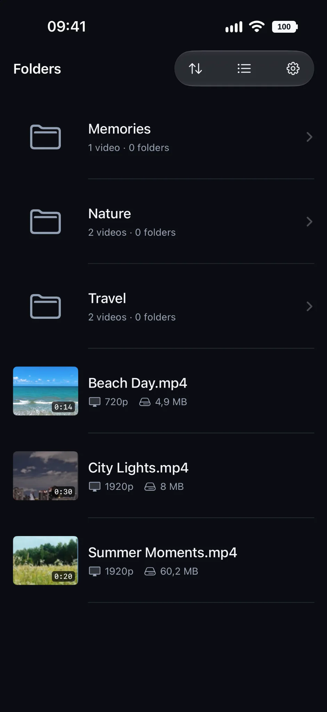

Keep your folders
Browse your existing folders without rearranging files.
YOUR VIDEOS. YOUR FOLDERS. YOUR PLAYER.
No ads. No account. Just your videos.
Your files, your folders, your player. Simple playback on iPhone and iPad.

PRIVATE BY DESIGN
No ads, no sign-in. Local videos play offline.
WHY KINEST
Folders, previews, subtitles and playback. Nothing in your way.
Browse your existing folders without rearranging files.
See thumbnails, durations and useful file details.
Open local videos straight from Files.
Bring SRT subtitles and choose audio tracks.
BUILT FOR YOUR LIBRARY
Keep your folders. Find a video. Press play.
GET STARTED
Quick guides to help you play and organize your own videos.
Play a local MP4 or MOV directly from the Files picker.
Read the guide ↗02 / LIBRARYKeep your own folder hierarchy and add multiple sources.
Read the guide ↗03 / SUBTITLESImport a subtitle file and customize its appearance.
Read the guide ↗GOOD TO KNOW
Kinest supports compatible MP4, MOV and M4V video files. Playback depends on codecs supported by your iPhone or iPad.
Yes. Locally available videos can be played offline. Files from iCloud Drive or other cloud providers may require a connection to download or access.
No. You can open individual files directly, or add files and folders as Library sources using the native Files picker.
Kinest requires no account, and does not upload your videos or playback history to a Kinest server. See the Privacy Policy for details.
READY WHEN YOU ARE
Your videos. Your folders. Your player.
Download on theApp Store